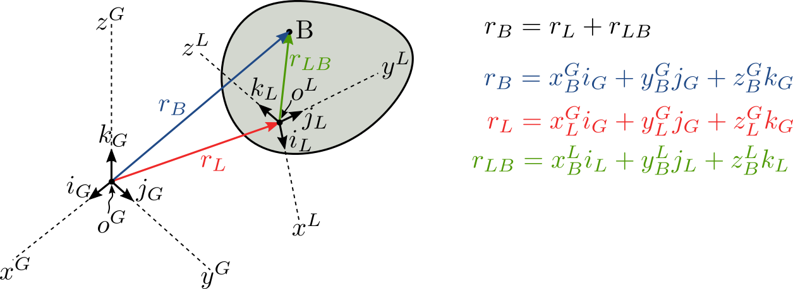
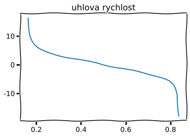
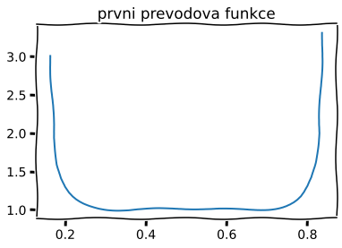

Klasifikace
Mechanismy je možno rozdělit na rovinné a prostorové. U rovinných mechanismů (i když jsou prostorově konstruovány) všechny body mechanismu se pohybují v rovinách rovnoběžných, osy rotací jsou rovnoběžné, při grafickém znázorňování jsou tyto osy kolmé na roviny pohybů. Členy mechanismů nemusí být rovinné útvary tj. desky- např. klikový mechanismus spalovacího motoru. U prostorových mechanismů konají jednotlivá tělesa vzhledem k rámu nebo vůči sobě prostorové pohyby.
Nejčastěji se vyskytují mechanismy, které mají jeden stupeň volnosti. Má-li mechanismus dva stupně volnosti, nazývá se diferenciál.
Převodová funkce
Podle převodu se mechanismy dělí na mechanismy s konstantním převodem (závislost hnané souřadnice na hnací je lineární) a mechanismy s nekonstantním převodem(závislost hnaných souřadnic na hnací je nelineární).Závislost souřadnice hnaného členu \(\Psi\) na hnací souřadnici \(\phi\) nazýváme zdvihovou závislostí:
\[
\begin{equation}
\Psi = \lambda(\phi)
\end{equation}
\]
Itá derivace je pak itá převodová funkce:
\[
\begin{equation}
\mu_{i} = \frac{d^i\Psi}{d\phi^i}
\end{equation}
\]
Vektorová smyčka: problém
Uvažujme těleso, které vykonává otáčivý a posuvný pohyb:

Zavěďme dva souřadnicové systémy (SS): globální a lokální a uvažujme těleso dokonale tuhé. Vektoy ve vektorové smyčce lze sčítat jen v rámci jednoho souřadnicového systému a tak musí být všechny vektory transformovány podle potřeby.

Oba SS prochází stejným počátkem pro jednoduchost. Uvažujme dva SS, které mají společný počátek a vyjádřeme kosíny os lokálního SS v globálním SS.

Transformační matice \(\mathrm{T}\) obsahuje 9 neznámých úhlů. Pro \(r_B\) dokonce 12 neznámých. Úhly nejsou nezávislé a splňují vazebné podmínky:
\[\begin{split}
\begin{align}
\cos(\alpha_x)^2+\cos(\beta_x)^2 + \cos(\gamma_x)^2 = & 1 \\
\cos(\alpha_y)^2+\cos(\beta_y)^2 + \cos(\gamma_y)^2 = & 1 \\
\cos(\alpha_y)^2+\cos(\beta_y)^2 + \cos(\gamma_y)^2 = & 1 \\
i_L\cdot j_L = & 0 \\
j_L\cdot k_L = & 0 \\
k_L\cdot i_L = & 0
\end{align}
\end{split}\]
Tedy 6 rovnic odebere přebývajících 6 stupňů volnosti.
Speciální případ \(\mathrm{T}^{GL}\) pro 2D
Uvažujme globální a lokální SS, které mají společný počátek a platí, že \(z^G = z^L\)

\(\mathrm{T}(\phi(t))\): \(r_B^G(t) = r_L^G(t) + \mathrm{T}^{GL}(t)r_B^L\) (přejdeme k zápisu zohledňující SS.)
rychlost: \(\dot{r}_B^G=\dot{r}_L^G + \dot{\mathrm{T}}^{GL}r_B^G + \mathrm{T}^{GL}\dot{r}_B^L\)
zrychlení: \(\ddot{r}_B^G=\ddot{r}_L^G + \ddot{\mathrm{T}}^{GL}r_B^G + 2\dot{\mathrm{T}}^{GL}\dot{r}_B^G + \mathrm{T}^{GL}\ddot{r}_B^L\)
Některé členy budeme považovat za konstantní: \(r_B^L\), časová derivace transformační matice \(\mathrm{T}^{GL}\) je:
\[\begin{split}
\begin{equation}
\dot{\mathrm{T}}^{GL} = \begin{bmatrix}
-\sin(\phi) & -\cos(\phi) & 0 \\
\cos(\phi) & -\sin(\phi) & 0 \\
0 & 0 & 0
\end{bmatrix}\dot{\phi}
\end{equation}
\end{split}\]
a zrychlení:
\[\begin{split}
\begin{equation}
\ddot{\mathrm{T}}^{GL} = \begin{bmatrix}
-\cos(\phi) & \sin(\phi) & 0 \\
-\sin(\phi) & -\cos(\phi) & 0 \\
0 & 0 & 0
\end{bmatrix}\dot{\phi}^2 + \begin{bmatrix}
-\sin(\phi) & -\cos(\phi) & 0 \\
\cos(\phi) & -\sin(\phi) & 0 \\
0 & 0 & 0 \end{bmatrix} \ddot{\phi}
\end{equation}
\end{split}\]
poznámka: \(\dot{w}^L = (\mathrm{T}^{GL})^T\dot{\mathrm{T}}^{GL}w^G\)
Příklad 01: svázané body
Uvažujte dokonalé lano bez tření, které se odvíjí z bubnu o poloměru \(R\). Na konci lana je bod \(A\), který se pohybuje vodorovně konstantní rychlostí \(v_A\).
Určete:
a) průběh natočení \(\phi\) na čase \(t\)
b) průběh úhlové rychlosti \(\omega\) na čase \(t\)
c) průběh úlového zrychlení \(\alpha\) na čase \(t\)
d) obvodovou rychlost \(v_A'\) bubnu na čase \(t\)
Řešení
Nejdříve zavedeme sledované a pomocné veličiny:
Je zřejmé, že:
\[
\begin{equation}
v'_A = v_A\sin(\gamma_A)
\end{equation}
\]
také, že \(x_A = v_A t\) a \(\cos(\gamma_A) = \frac{R}{R+x_A}\)
Pomocný úhel \(\gamma_A\) lze snadno nahradit (gon.identita):
\[
\begin{equation}
\Big(\frac{R}{R+x_A}\Big)^2 + \Big(\frac{v'_A}{v_A}\Big)^2 = 1 \tag{1}
\end{equation}
\]
Obvodou rychlost bubunu známe! Proto:
\[
\begin{equation}
v'_A = \omega R
\end{equation}
\]
dosadíme do (1):
\[
\begin{equation}
\omega = \pm \frac{v_A}{R}\sqrt{1-\Big(\frac{R}{R + x_A}\Big)^2} = - \frac{v_A}{R}\sqrt{1-\Big(\frac{1}{1 + \frac{v_A t}{R}}\Big)^2} \tag{2}
\end{equation}
\]
Zrychlení \(\alpha\) je dáno derivací \(\dot{\omega}\):
\[\displaystyle - \frac{v_{A}^{2}}{R^{2} \left(1 + \frac{t v_{A}}{R}\right)^{3} \sqrt{1 - \frac{1}{\left(1 + \frac{t v_{A}}{R}\right)^{2}}}}\]
Výpočet natočení \(\phi\) vychází z diff. rovnice \(\omega = \dot{\phi}\):
\[
\begin{equation}
\int_{0}^{\phi} d\phi = -\int_0^t \frac{v_A}{R}\sqrt{1-\Big(\frac{1}{1 + \frac{v_A t}{R}}\Big)^2} dt
\end{equation}
\]
Pro řešení intregrálu zaveďme substituci: \(u = 1 + \frac{v_At}{R}\), differenciál je pak \(du=\frac{v_A}{R}dt\), integrál přepíšeme:
\[
\begin{equation}
\int_0^{\phi} d\phi = -\int_1^{1+\frac{v_At}{R}}\sqrt{1 - \frac{1}{u^2}} du
\end{equation}
\]
\[\begin{split}\displaystyle \phi{\left(u \right)} = C_{1} - \begin{cases} - \frac{i u^{2}}{\sqrt{1 - u^{2}}} - i \operatorname{acosh}{\left(\frac{1}{u} \right)} + \frac{i}{\sqrt{1 - u^{2}}} & \text{for}\: \frac{1}{u^{2}} > 1 \\\frac{u^{2}}{\sqrt{u^{2} - 1}} + \operatorname{asin}{\left(\frac{1}{u} \right)} - \frac{1}{\sqrt{u^{2} - 1}} & \text{otherwise} \end{cases}\end{split}\]
Řešení diff. rovnice je komplikované, tak přejdeme k numerice:
<lambdifygenerated-2>:2: RuntimeWarning: divide by zero encountered in true_divide
return -1/(sqrt(1 - 1/(t + 1)**2)*(t + 1)**3)
findfont: Font family ['xkcd', 'xkcd Script', 'Humor Sans', 'Comic Neue', 'Comic Sans MS', 'StayPuft'] not found. Falling back to DejaVu Sans.
findfont: Font family ['xkcd', 'xkcd Script', 'Humor Sans', 'Comic Neue', 'Comic Sans MS', 'StayPuft'] not found. Falling back to DejaVu Sans.
Příklad 02: Zdvihací rameno
Uvažujte jednoduché robotické rameno podle obrázku.
Pro zadané parametry \(a, b, c, d, L, T\) a lineární servo pohon jehož předpis pro polohu je \(l(t)=4L\frac{t}{T}(1 - \frac{t}{T})\)
určete:
a) průběh natočení \(\phi\) na čase \(t\)
b) průběh úhlové rychlosti \(\omega\) na čase \(t\)
c) průběh úlového zrychlení \(\alpha\) na čase \(t\)
d) zdvihovou funkci \(\Psi\)
e) 1. převodou funkci \(\mu\)
Řešení
Nejdříve formulujeme globální a lokální polohové vektory:
\(r_L^G = \begin{bmatrix}0 \\ h \\ 0\end{bmatrix}\);
\(r_B^G = \begin{bmatrix}b \\ 0 \\ 0\end{bmatrix}\);
\(r_A^L = \begin{bmatrix}a \\ 0 \\ 0\end{bmatrix}\);
\(r_C^L = \begin{bmatrix}c \\ d \\ 0\end{bmatrix}\)
Dále sestavíme vektorovu rovnici pro bod A v globálním SS:
\[
\begin{equation}
r_A^G = r_L^G + \mathrm{T}^{GL}r_A^L \tag{1}
\end{equation}
\]
Výpočet natočení \(\phi\)
Abychom zohlednili proměnnou vzdálenost bodů A a B, předepsanou funkcí \(l(t)\), formulujeme vektor \(r_{AB}^G=r_A^G - r_B^G\). Snadno zjistíme, že:
\[
\begin{equation}
r_{AB}^G\cdot r_{AB}^G = l^2(l) \tag{2}
\end{equation}
\]
A tedy platí, že rozšíření (1):
\[
\begin{equation}
r_A^G - r_B^G = r_L^G -r_B^G + \mathrm{T}^{GL}r_A^L \tag{3}
\end{equation}
\]
\[\displaystyle - 2.0 \operatorname{atan}{\left(\frac{2.0 T^{4} a h - 39.1918358845308 \sqrt{- 0.166666666666667 L^{4} T^{4} t^{4} + 0.666666666666667 L^{4} T^{3} t^{5} - L^{4} T^{2} t^{6} + 0.666666666666667 L^{4} T t^{7} - 0.166666666666667 L^{4} t^{8} + 0.0208333333333333 L^{2} T^{6} a^{2} t^{2} + 0.0208333333333333 L^{2} T^{6} b^{2} t^{2} + 0.0208333333333333 L^{2} T^{6} h^{2} t^{2} - 0.0416666666666667 L^{2} T^{5} a^{2} t^{3} - 0.0416666666666667 L^{2} T^{5} b^{2} t^{3} - 0.0416666666666667 L^{2} T^{5} h^{2} t^{3} + 0.0208333333333333 L^{2} T^{4} a^{2} t^{4} + 0.0208333333333333 L^{2} T^{4} b^{2} t^{4} + 0.0208333333333333 L^{2} T^{4} h^{2} t^{4} - 0.000651041666666667 T^{8} a^{4} + 0.00130208333333333 T^{8} a^{2} b^{2} + 0.00130208333333333 T^{8} a^{2} h^{2} - 0.000651041666666667 T^{8} b^{4} - 0.00130208333333333 T^{8} b^{2} h^{2} - 0.000651041666666667 T^{8} h^{4}}}{- 16.0 L^{2} T^{2} t^{2} + 32.0 L^{2} T t^{3} - 16.0 L^{2} t^{4} + T^{4} a^{2} + 2.0 T^{4} a b + T^{4} b^{2} + T^{4} h^{2}} \right)}\]
Výpočet úhlové rychlosti \(\omega\)
Přepíšeme rovnici (4) na:
\[
\begin{equation}
-b\cos(\phi) + h\sin(\phi) = \frac{l^2(t) - a^2 - b^2 - h^2}{2a}
\end{equation}
\]
a implicitně zderivujeme:
\[
\begin{equation}
b\sin(\phi)\dot{\phi} + h\cos(\phi)\dot{\phi} = \frac{l}{a}\dot{l}(t \rightarrow \dot{\phi} = \frac{l(t)}{a(b\sin(\phi)+h\cos(\phi))}\dot{l}(t) \tag{5}
\end{equation}
\]
kde \(\dot{l}(t) = \frac{4L}{T}(1-2\frac{t}{T})\)
\[\displaystyle \frac{4 L \left(1.0 - \frac{t}{T}\right)}{T} - \frac{4 L t}{T^{2}}\]
Výpočet úhlového zrychlení \(\alpha\)
Opět implicitně zderivujeme výraz (5):
\[
\begin{equation}
b\cos(\phi)\dot{\phi}^2 + b\sin(\phi)\ddot{\phi} - h\sin(\phi)\dot{\phi}^2 + h\cos(\phi)\ddot{\phi} = \frac{1}{a}\Big(\dot{l}^2(t) + l(t)\ddot{l}(t)\Big)
\end{equation}
\]
\[
\begin{equation}
\rightarrow \alpha = \frac{\dot{l}^2(t) + l(t)\ddot{l}(t) - a\Big(b\cos(\phi) - h\sin(\phi)\Big)\dot{\phi}^2}{a\Big(b\sin(\phi) + h\cos(\phi)\Big)}
\end{equation}
\]
\[\displaystyle \frac{- \frac{16 L^{2} t^{2} \left(1.0 - \frac{t}{T}\right)^{2} \left(b \cos{\left(2.0 \operatorname{atan}{\left(\frac{2.0 T^{4} a h - 39.1918358845308 \sqrt{- 0.166666666666667 L^{4} T^{4} t^{4} + 0.666666666666667 L^{4} T^{3} t^{5} - L^{4} T^{2} t^{6} + 0.666666666666667 L^{4} T t^{7} - 0.166666666666667 L^{4} t^{8} + 0.0208333333333333 L^{2} T^{6} a^{2} t^{2} + 0.0208333333333333 L^{2} T^{6} b^{2} t^{2} + 0.0208333333333333 L^{2} T^{6} h^{2} t^{2} - 0.0416666666666667 L^{2} T^{5} a^{2} t^{3} - 0.0416666666666667 L^{2} T^{5} b^{2} t^{3} - 0.0416666666666667 L^{2} T^{5} h^{2} t^{3} + 0.0208333333333333 L^{2} T^{4} a^{2} t^{4} + 0.0208333333333333 L^{2} T^{4} b^{2} t^{4} + 0.0208333333333333 L^{2} T^{4} h^{2} t^{4} - 0.000651041666666667 T^{8} a^{4} + 0.00130208333333333 T^{8} a^{2} b^{2} + 0.00130208333333333 T^{8} a^{2} h^{2} - 0.000651041666666667 T^{8} b^{4} - 0.00130208333333333 T^{8} b^{2} h^{2} - 0.000651041666666667 T^{8} h^{4}}}{- 16.0 L^{2} T^{2} t^{2} + 32.0 L^{2} T t^{3} - 16.0 L^{2} t^{4} + T^{4} a^{2} + 2.0 T^{4} a b + T^{4} b^{2} + T^{4} h^{2}} \right)} \right)} + h \sin{\left(2.0 \operatorname{atan}{\left(\frac{2.0 T^{4} a h - 39.1918358845308 \sqrt{- 0.166666666666667 L^{4} T^{4} t^{4} + 0.666666666666667 L^{4} T^{3} t^{5} - L^{4} T^{2} t^{6} + 0.666666666666667 L^{4} T t^{7} - 0.166666666666667 L^{4} t^{8} + 0.0208333333333333 L^{2} T^{6} a^{2} t^{2} + 0.0208333333333333 L^{2} T^{6} b^{2} t^{2} + 0.0208333333333333 L^{2} T^{6} h^{2} t^{2} - 0.0416666666666667 L^{2} T^{5} a^{2} t^{3} - 0.0416666666666667 L^{2} T^{5} b^{2} t^{3} - 0.0416666666666667 L^{2} T^{5} h^{2} t^{3} + 0.0208333333333333 L^{2} T^{4} a^{2} t^{4} + 0.0208333333333333 L^{2} T^{4} b^{2} t^{4} + 0.0208333333333333 L^{2} T^{4} h^{2} t^{4} - 0.000651041666666667 T^{8} a^{4} + 0.00130208333333333 T^{8} a^{2} b^{2} + 0.00130208333333333 T^{8} a^{2} h^{2} - 0.000651041666666667 T^{8} b^{4} - 0.00130208333333333 T^{8} b^{2} h^{2} - 0.000651041666666667 T^{8} h^{4}}}{- 16.0 L^{2} T^{2} t^{2} + 32.0 L^{2} T t^{3} - 16.0 L^{2} t^{4} + T^{4} a^{2} + 2.0 T^{4} a b + T^{4} b^{2} + T^{4} h^{2}} \right)} \right)}\right) \left(\frac{4 L \left(1.0 - \frac{t}{T}\right)}{T} - \frac{4 L t}{T^{2}}\right)^{2}}{T^{2} a \left(- b \sin{\left(2.0 \operatorname{atan}{\left(\frac{2.0 T^{4} a h - 39.1918358845308 \sqrt{- 0.166666666666667 L^{4} T^{4} t^{4} + 0.666666666666667 L^{4} T^{3} t^{5} - L^{4} T^{2} t^{6} + 0.666666666666667 L^{4} T t^{7} - 0.166666666666667 L^{4} t^{8} + 0.0208333333333333 L^{2} T^{6} a^{2} t^{2} + 0.0208333333333333 L^{2} T^{6} b^{2} t^{2} + 0.0208333333333333 L^{2} T^{6} h^{2} t^{2} - 0.0416666666666667 L^{2} T^{5} a^{2} t^{3} - 0.0416666666666667 L^{2} T^{5} b^{2} t^{3} - 0.0416666666666667 L^{2} T^{5} h^{2} t^{3} + 0.0208333333333333 L^{2} T^{4} a^{2} t^{4} + 0.0208333333333333 L^{2} T^{4} b^{2} t^{4} + 0.0208333333333333 L^{2} T^{4} h^{2} t^{4} - 0.000651041666666667 T^{8} a^{4} + 0.00130208333333333 T^{8} a^{2} b^{2} + 0.00130208333333333 T^{8} a^{2} h^{2} - 0.000651041666666667 T^{8} b^{4} - 0.00130208333333333 T^{8} b^{2} h^{2} - 0.000651041666666667 T^{8} h^{4}}}{- 16.0 L^{2} T^{2} t^{2} + 32.0 L^{2} T t^{3} - 16.0 L^{2} t^{4} + T^{4} a^{2} + 2.0 T^{4} a b + T^{4} b^{2} + T^{4} h^{2}} \right)} \right)} + h \cos{\left(2.0 \operatorname{atan}{\left(\frac{2.0 T^{4} a h - 39.1918358845308 \sqrt{- 0.166666666666667 L^{4} T^{4} t^{4} + 0.666666666666667 L^{4} T^{3} t^{5} - L^{4} T^{2} t^{6} + 0.666666666666667 L^{4} T t^{7} - 0.166666666666667 L^{4} t^{8} + 0.0208333333333333 L^{2} T^{6} a^{2} t^{2} + 0.0208333333333333 L^{2} T^{6} b^{2} t^{2} + 0.0208333333333333 L^{2} T^{6} h^{2} t^{2} - 0.0416666666666667 L^{2} T^{5} a^{2} t^{3} - 0.0416666666666667 L^{2} T^{5} b^{2} t^{3} - 0.0416666666666667 L^{2} T^{5} h^{2} t^{3} + 0.0208333333333333 L^{2} T^{4} a^{2} t^{4} + 0.0208333333333333 L^{2} T^{4} b^{2} t^{4} + 0.0208333333333333 L^{2} T^{4} h^{2} t^{4} - 0.000651041666666667 T^{8} a^{4} + 0.00130208333333333 T^{8} a^{2} b^{2} + 0.00130208333333333 T^{8} a^{2} h^{2} - 0.000651041666666667 T^{8} b^{4} - 0.00130208333333333 T^{8} b^{2} h^{2} - 0.000651041666666667 T^{8} h^{4}}}{- 16.0 L^{2} T^{2} t^{2} + 32.0 L^{2} T t^{3} - 16.0 L^{2} t^{4} + T^{4} a^{2} + 2.0 T^{4} a b + T^{4} b^{2} + T^{4} h^{2}} \right)} \right)}\right)^{2}} - \frac{32 L^{2} t \left(1.0 - \frac{t}{T}\right)}{T^{3}} + \left(\frac{4 L \left(1.0 - \frac{t}{T}\right)}{T} - \frac{4 L t}{T^{2}}\right)^{2}}{a \left(- b \sin{\left(2.0 \operatorname{atan}{\left(\frac{2.0 T^{4} a h - 39.1918358845308 \sqrt{- 0.166666666666667 L^{4} T^{4} t^{4} + 0.666666666666667 L^{4} T^{3} t^{5} - L^{4} T^{2} t^{6} + 0.666666666666667 L^{4} T t^{7} - 0.166666666666667 L^{4} t^{8} + 0.0208333333333333 L^{2} T^{6} a^{2} t^{2} + 0.0208333333333333 L^{2} T^{6} b^{2} t^{2} + 0.0208333333333333 L^{2} T^{6} h^{2} t^{2} - 0.0416666666666667 L^{2} T^{5} a^{2} t^{3} - 0.0416666666666667 L^{2} T^{5} b^{2} t^{3} - 0.0416666666666667 L^{2} T^{5} h^{2} t^{3} + 0.0208333333333333 L^{2} T^{4} a^{2} t^{4} + 0.0208333333333333 L^{2} T^{4} b^{2} t^{4} + 0.0208333333333333 L^{2} T^{4} h^{2} t^{4} - 0.000651041666666667 T^{8} a^{4} + 0.00130208333333333 T^{8} a^{2} b^{2} + 0.00130208333333333 T^{8} a^{2} h^{2} - 0.000651041666666667 T^{8} b^{4} - 0.00130208333333333 T^{8} b^{2} h^{2} - 0.000651041666666667 T^{8} h^{4}}}{- 16.0 L^{2} T^{2} t^{2} + 32.0 L^{2} T t^{3} - 16.0 L^{2} t^{4} + T^{4} a^{2} + 2.0 T^{4} a b + T^{4} b^{2} + T^{4} h^{2}} \right)} \right)} + h \cos{\left(2.0 \operatorname{atan}{\left(\frac{2.0 T^{4} a h - 39.1918358845308 \sqrt{- 0.166666666666667 L^{4} T^{4} t^{4} + 0.666666666666667 L^{4} T^{3} t^{5} - L^{4} T^{2} t^{6} + 0.666666666666667 L^{4} T t^{7} - 0.166666666666667 L^{4} t^{8} + 0.0208333333333333 L^{2} T^{6} a^{2} t^{2} + 0.0208333333333333 L^{2} T^{6} b^{2} t^{2} + 0.0208333333333333 L^{2} T^{6} h^{2} t^{2} - 0.0416666666666667 L^{2} T^{5} a^{2} t^{3} - 0.0416666666666667 L^{2} T^{5} b^{2} t^{3} - 0.0416666666666667 L^{2} T^{5} h^{2} t^{3} + 0.0208333333333333 L^{2} T^{4} a^{2} t^{4} + 0.0208333333333333 L^{2} T^{4} b^{2} t^{4} + 0.0208333333333333 L^{2} T^{4} h^{2} t^{4} - 0.000651041666666667 T^{8} a^{4} + 0.00130208333333333 T^{8} a^{2} b^{2} + 0.00130208333333333 T^{8} a^{2} h^{2} - 0.000651041666666667 T^{8} b^{4} - 0.00130208333333333 T^{8} b^{2} h^{2} - 0.000651041666666667 T^{8} h^{4}}}{- 16.0 L^{2} T^{2} t^{2} + 32.0 L^{2} T t^{3} - 16.0 L^{2} t^{4} + T^{4} a^{2} + 2.0 T^{4} a b + T^{4} b^{2} + T^{4} h^{2}} \right)} \right)}\right)}\]
Zdvihová závislost a převodové funkce
Zdvihová závilost \(\phi(l)\) je přímo výraz pro \(\Psi\). Převodovou funkci \(\mu = \frac{d\phi}{dl}\) nalezneme snadno z (4):
\[
\begin{equation}
b\sin(\phi)\frac{d\phi}{dl} + h\cos(\phi)\frac{d\phi}{dl} = \frac{2l(t)}{2a}
\end{equation}
\]
\[
\begin{equation}
\frac{d\phi}{dl} = \frac{l(t)}{a\Big(b\sin(\phi) + h\cos(\phi)\Big)} \tag{6}
\end{equation}
\]
Vykreslení kinematických veličin
<Figure size 1080x360 with 0 Axes>
Text(0.5, 1.0, 'Zdvihova funkce')
findfont: Font family ['xkcd', 'xkcd Script', 'Humor Sans', 'Comic Neue', 'Comic Sans MS', 'StayPuft'] not found. Falling back to DejaVu Sans.
Text(0.5, 1.0, 'natoceni')
Text(0.5, 1.0, 'uhlova rychlost')

Text(0.5, 1.0, 'uhlove zrychleni')
Text(0.5, 1.0, 'prvni prevodova funkce')
